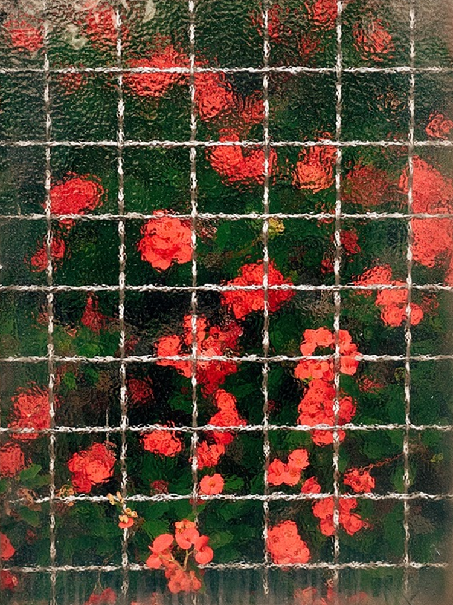

A Year of Saying No
When I quit my job last year, I had expectations. I had this vision of the dream job, this company somewhere out there, with an empty Aeron chair that had my name on it, in a beautiful studio space with those expensive snacks and a role that required everything I love—research, ideas, beautiful design—all in order to create fun, emotional products with a deep and resonating why.
So I started freelancing, always looking around, taking interviews while still designing for myself every day and working with friends. And then the emails came in, from all the companies at the top of my list. And none of them felt right. The people I talked to were all wonderful, understanding, and very forthcoming. But something didn’t feel right.
After more than a decade working full-time, I’d gotten used to saying yes—saying yes to clients, ideas, colleagues, and pretty much anyone else in a professional context. And that was mostly the correct answer. You’re young, learning, and at the end of the day, it’s a service industry, and the people across the table are paying for the party.
But now I was in Zoom calls with people who weren’t paying for my party (yet). And I had a lot of saying-no catching up to do. Not in a mean way—in a way that felt true to how I really felt. It’s easy to lose that little voice, that gut feeling that makes you think, ‘none of this makes sense,’ but you go with it anyway because… I mean, most of us want harmony and are conflict-averse, and no is a scary word. But compromising on things you feel strongly about kills you, a little bit, every time.
So after some wonderful minutes fantasizing about how this job update would look on my LinkedIn, I snapped back into reality and turned it all down. I waited for the regret to kick in—but it never came. The opposite was true. Every time I gave a heartfelt “I don’t think I’m a good fit,” I felt light. Deep down, I knew it wasn’t the right time or the right fit. Maybe someday, but not today.
I probably also knew that no one will come rescue me—no one will knock on my door with that magical dream job. I was waiting at a bus stop I had built myself, made from branches and leaves, and I don’t think a single bus in this world would ever find its way to me. But I built it anyway, in hopes that I don’t have to figure all of this out myself.
So I’ve stopped waiting. It made more sense to actively create that job and life myself—because it’s all about the details, and those can’t be handed off to someone else. All the things I want to make—I don’t need permission to do them. Especially now that the barriers to entry are lower than ever. Nerve-wracking, but doable.
So for now, I’m my own dream client—making things with friends, building my own bus (sorry for the weirdest analogy ever written, but it makes me laugh), driving aimlessly around the forest, guided only by what feels right, what’s interesting, plus an old compass with my personal values scratched into it instead of cardinal directions. I still want that Aeron chair, though.
In the end, last year was a lot of saying no. And I’m shocked how no one ever taught me how great a no can be. Not just for oneself, but also for the people on the other end who aren’t used to getting a real answer.
We are taught to grab every opportunity, to say yes to everything shiny and impressive. “It might never come back!” What an exhausting way to go through life.
What about what you really want? It’s easy to start playing mind games—to do something in order to do something else later down the road, which will then maybe open the doors to the thing you wanted to do right from the start. All fueled by risk-aversion and a little bit of ego. It sounds silly when I write it down like this, because it is.
Everyone deserves to say no for a while, to accept zero compromises, to make and do exactly what’s in your head and heart—and see where it’ll take you. It’s such a powerful way to get back on course.
I was thinking of ending this with some version of “because every true no is a true yes to yourself ” kind of thing, but I’m truly just thinking about that Aeron chair. God, what a great chair.
I also don’t know what the takeaway of all this is, other than this: saying no has brought me so much peace and calm, and made me more confident in myself than ever before. I feel like, for the first time, I’m in the right place to make decisions I can live with—no matter the outcome.
back